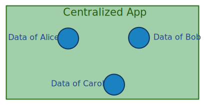

SOCOM Tutorial Slides - Solid
Solid: a decentralized Web ecosystem

Collection of open Web standards
Detaches data from application
Personal data pods → data ownership
The Web as a decentralized platform
- CERN 1989: invention of the Web, Tim Berners-lee
Information space with uniquely identifiable documents that can be linked.
- Decentralization is complex
The Web evolves towards centralized applications,
for example: social networks
The new centralized Web has issues
Tim Berners-Lee was troubled by this
-
He did not like the way the Web was evolving
As it is becoming increasingly more centralized
-
He felt that the Web was in need of major repair
The Web should go back to its original purpose as decentralized platform
-
The Solid project was initiated as a first step to fix it
By giving users back the control over their data
Inrupt was founded to build on Solid
-
A startup founded in 2018
by Tim Berners-Lee and John Bruce
-
Commercial driver behind of Solid
Development of tools and offering services to enable Solid adoption
Solid gives back control to the user
-
Personal data pods
Data is stored in personal online data storages
-
Personal identity
Users are owners of their own identity through WebID
-
Data authorization
Users can give others fine-grained access to their data
-
Data is decoupled from applications
Applications don't store data, but require permission to data pods
Freedom to locate your data anywhere
Data pods implement the Linked Data Platform (LDP) specification
Users are in control of their own identity
-
Your own WebID
Identification and authorization with a unique URI
-
Log into different places
Applications require you to log in before they can use your personal data
-
You are in control
Account not in the hands of third-parties such as Google or Facebook
Fine-grained access control to data
-
Each file has a corresponding Access Control List (ACL) file
Describes who (WebID) has access to the resource, and the modes of access.
-
Different modes of access
Read, write, append, control
-
ACLs can inherit from ACLs in parent directories
Makes it easier to defined scoped access
Data is decoupled from applications


-
Applications need to ask for data access
Access can be revoked at any time
-
Reduced vendor lock-in
Other applications can work with the same data
Summary
-
Solid aims to re-decentralize the Web
Decouples data from applications
-
Solid is not a tool, but an ecosystem
A collection of open Web standards (LDP, WebID-OIDC, WAC, ...)
-
Inrupt is a commercial driver behind Solid
Develops Node Solid Server, Solid React SDK, ...